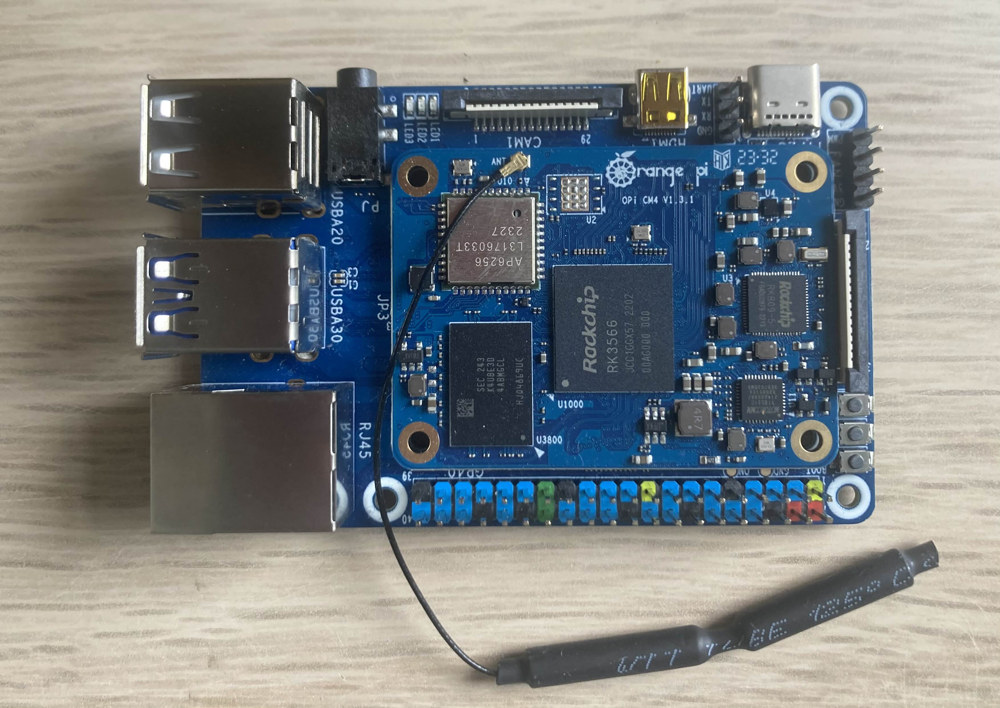
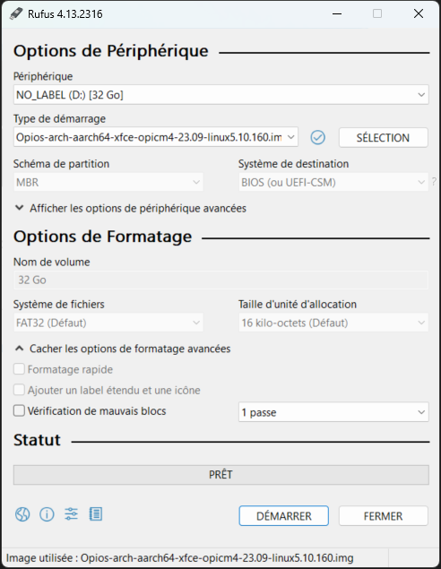
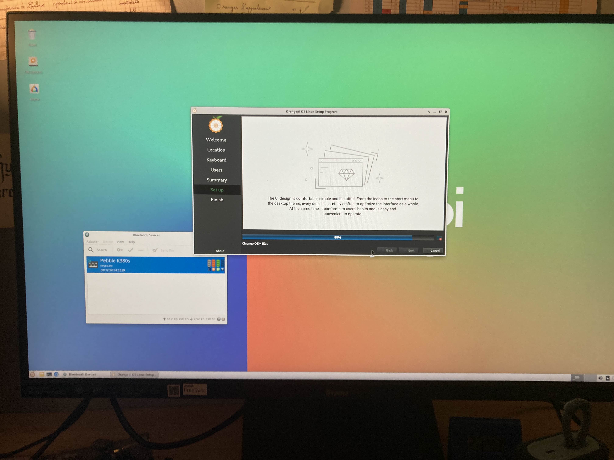

A la découverte d’Orange Pi !#
Dans cet article nous allons partir à la découverte des mini ordinateurs avec le Orange Pi CM4 pour créer un ordiateur de breau sur linux.

source : personnelleCarte#
Nous possédons un Orange Pi CM4 Based Board ainsi qu’un Orange Pi Compute Module 4
Voici des ressources
Installation#
Sur une carte mémoire micro SDHC de 32 Gb, j’installe le système d’exploitation.
-

source : personnelle -
J’utilise Rufus pour flashé l’OS sur la carte SD
-

source : personnelle -
Après avoir branché un écran, un clavier, une sourie et enfin l’alimentation. L’installation ce lance directement. Nous n’avons pratiquement rien à faire